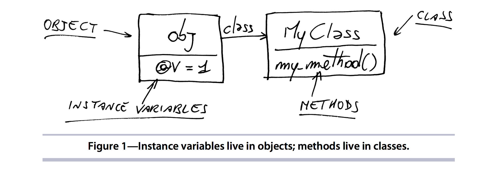
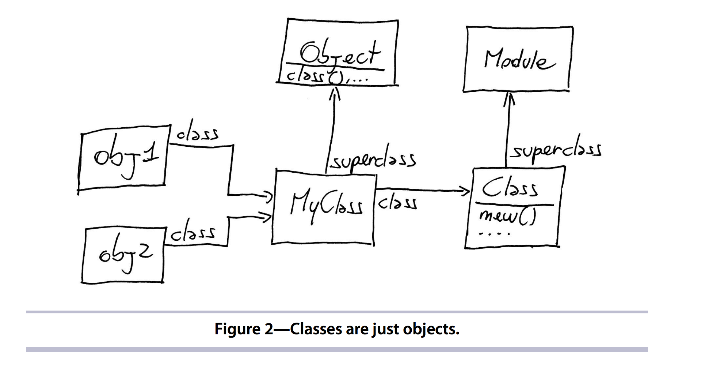

DriversManual: Metaprogramming Ruby Chapter 2 Part 1
< 9 Sep 2016>
driversmanual metaprogramming ruby
The Object Model
Contents
class- Problem with Open Classes
- What’s an object?
- Classes
- Modules
- Classes as Objects
- Constants
- Structure like a File System
- Objects and Classes Wrap-Up
class
- Open Classes
- Editing Standard Objects
Open Classes
classas in something likeclass Foois more like a scope method since:- it instantiates
Fooif it doesn’t exist and opensFoootherwise
- it instantiates
class Foo
def one_method
puts 'one'
end
end
class Foo
def two_method
puts 'two'
end
end
foo-instance = Foo.new
foo-instance.one_method # => 'one'
foo-instance.two_method # => 'two'
Editing Standard Library Objects
- classes can also be changed on the fly
class String
def word_characters
gsub(/[^\w]+/, '')
end
end
"asdf1234##".word_characters # => 'asdf1234'
Problem with Open Classes
- Do not overwrite existing methods since you might end up with unintended side effects
- known as “monkey patching”
- ex: overwriting
Array#replace
class Array
def replace(...)
end
end
What’s an object?
obj = MyObject.new
- instance
objcontain instance variables@variable, and ref to class- variables not connected to Class
- methods
- a list can be provided through
MyClass#methods - stored in the class
- a list can be provided through

Classes
- classes are also objects of
Class!- allows for
Class.newcall - Class.instance_methods(false) => [:allocate, :new, :superclass]
- allows for
Modules
- very similar to class but with out inheritance
- all classes are modules since they are instances of
Module - Picking between
ClassandModuleis mainly for clarity
Classes as Objects
- whiteboard the relationships between
- class MyClass; end
- obj1 = MyClass.new
- obj2 = MyClass.new
- Class
- Module
- Object
Classes as Objects (diagram)

Constants
- start with a capital letter
- can still be changed
Structure like a File System
- Classes and Modules are like directories
- constants are like files
module M
class C
X = 'a constant'
end
C::X # => "a constant"
end
M::C::X # => "a constant"
Module#constantsreturns constants in that scope, likelsModule#nestingreturns path’s- Namespacing is creating a Module to contain constants
Objects and Classes Wrap-Up
- What’s an object?
- instance vars, plus
- reference to its class
- instance methods live in the class
- What’s a class
- an object, instance of
Class, plus - instance methods, and
- link to superclass
Classis a subclass ofModule, so a class is also a module- class name is a constant reference to the class
- an object, instance of
Quiz Questions
Q: What is meant by 'Open' classes with ruby?
A: Classes can be changed on the fly
Q: What is Monkey Patching?
A: Changing Standard Class methods
Q: What parts of an instance is highlighted?
A: 1) instance variables, and 2) references to classes [that contain instance methods]
Q: What is the superclass of `Class`?
A: Module
Q: What are highlighted differences between Module and Class?
A: Class is an instance of Module. Classes have inheritance and instantiation Modules don't
Q: Compare instantiation vs child
A: Classes are children of their superclasses and instances of their class example: Class is an instance of Class and child of Module
Q: Class names were simply ________ in the text
A: constants
Q: How would you find a 'root' level constant 'Y'?
A: `::Y` the '::' acts like '~'
Q: With a File System metaphor, what is == to 'ls'?
A: the `Module#constants` method
Q: What is a Namespace?
A: a Module that exists to only be a container of constants
Q: What is an object?
A: instance vars + reference to its class
Q: What is a class?
A: instance of `Class` + instance methods + link to superclass